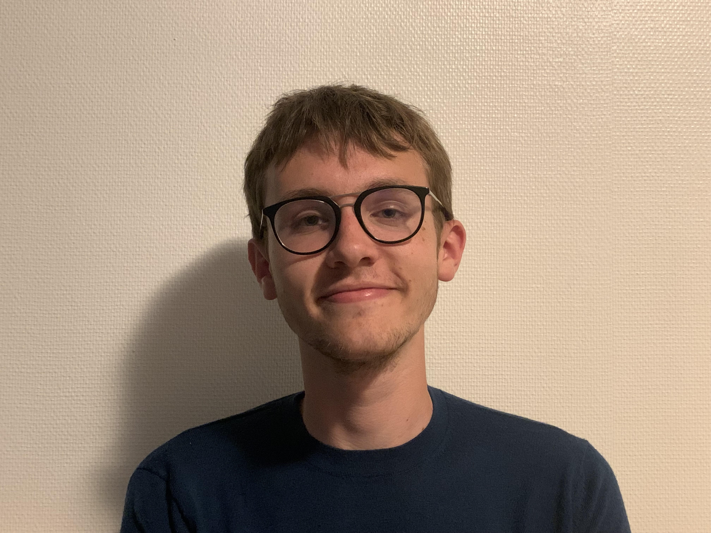

Lors de ces années d'apprentissage j'ai appris a travaillé en équipe, à coder dans différent language, python ou java par exemple. Mais surtout j'ai appris a construire avec des collaborateurs des projet et les mener à leur réussite, j'ai par exemple refait le jeu Citadelle en java.(voir mon Github)
Matthis Teplitxky

Les formations que j'ai suivis
Participer à Erasmus à Vilnius, Lituanie, en étudiant l'informatique, est une opportunité enrichissante qui a élargis mes horizons académiques et culturels tout en développant des compétences interculturelles et linguistiques précieuses, j'ai grâce a cette experience obtenus mon TOIEC en septembre 2023
Mon voyage académique m'a récemment conduit au Danemark, où j'ai eu la chance de participer au programme "Deep Dive into Entrepreneurship" à Aarhus. Cette expérience a été une véritable plongée dans le monde passionnant de l'entrepreneuriat, ça a été une première approche des travaux de groupe j'ai pu ausi voir le monde à travers un nouveau prisme.
Lors de ces années d'apprentissage j'ai appris a me familliariser avec l'anglais, à travailler et commencer à construire mon réseau. pendant deux ans j'ai explorer le monde scientifique en abordant principalement les maths, physique ou bien chimie.
Mes expériences professionnel
🤡
🕺
🏋
🧙
Wwoofing en ferme d'agriculture Biologique
Durant 10 semaines je suis allé dans une ferme biologique en Allemangne, ma motivation principale était l'apprentissage de l'Allemand. Là bas j'ai gérer une equipe de 6 personnes aux travail du sol, soins et récoltes de différentes cultures maraîchères.
Eulenhof-dogern site webOptimisation du système informatique
Pendant 2 mois j'ai au sein de la coopérative de Creully j'ai aidé à la mis à niveau de la section pommes de terres. Durant ce stage j'ai rmis en ordre lestockage interne et aidé les employés aà mieux comprendre et utiliser le système informatique.
Coopérative agricole site webAide à la personne
Pendant 2 mois, j'ai assisté et aidé des personnes en difficulté de ma région. C'était important pour moi de travaillé l'été et de quand même avoir une valuer ajouté. J'ai fait de belles rencontres et appris bcp de ces relations humaines.
Interim
De temps en temps lorsque des missions se proposes et que je suis disponible je fait de l'interim. C'est principalement de la manutention ou de la main d'oeuvre, ces multiples experiences me permettent de financer en partie ma scolarité.
Mes compétences dévellopé
Languages de programmation
Java
HTML5
CSS3
Python
Js
SQL
Langue
Anglais
Allemand
Chinois
Mes ambitions pour l'avenir
Pour le futur je veux m'orienter vers le managing des équipes, je cherche un contrat de professionnalisation en assistant responsable de projet par exemple. Mais je veut tout de même garder un contact avec le terrain car créer avec du code est un plaisir que je n'ai pas envie de perdre. Dans 5 ans je me vois à la tête d'une équipe que j'ai appris à connaître n'étant pas un chef qui dicte quoi faire mais un liens qui noue l'équipe et fait fonctionner tout les écrous de l'équipe.